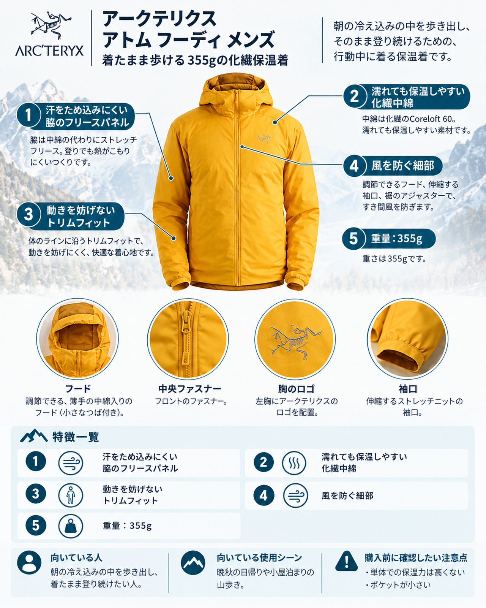

前線が通り過ぎると、山はいっきに晩秋の顔になります。高い山ではすでに初雪が降り、紅葉は中腹から低山へと下りてきました。この時期に悩ましいのが、朝の冷え込みと登りの汗の両立です。寒いからと厚着で歩き出すと汗だくになり、脱げば休憩のたびに冷える。今回は、そんな季節に「着たまま歩ける保温着」として、アークテリクスの化繊インサレーション「アトム フーディ メンズ」を紹介します。休憩時に羽織る保温着とは少し役割の違う、行動中の1枚という視点で見ていきます。
この記事で紹介する商品
基本スペック
| 項目 | 内容 |
|---|---|
| モデル番号 | X000009556 |
| 表地 | 20デニール ナイロン リップストップ（ナイロン100％、PFASフリーのFC0 DWR加工） |
| 脇の別布 | サーキュラーニットフリース（ポリエステル93％・エラスタン7％） |
| 中綿 | Coreloft 60（60g/m²、ポリエステル100％） |
| 裏地 | 20デニール リサイクルナイロン リップストップ |
| 重量 | 355g |
| サイズ | XS〜XXL（トリムフィット、センターバック丈はMで73cm） |
| 価格 | 49,500円（税込、2026年10月20日時点の公式サイトの表示。同日の表示は SOLD OUT） |
特徴とメリット
アトム フーディは、化繊の中綿を入れた薄手のインサレーションに、伸びるフリースの脇パネルを組み合わせたジャケットです。暖かさだけでなく、熱を逃がすことを考えたつくりが最大の特徴です。
- 汗をため込みにくい脇のフリースパネル：身頃の脇には中綿の代わりにストレッチフリースが入っています。使った人の声では、通気性の高さが特に評価されており、きつい登りでも暑くなりすぎず、ほとんどの時間快適だったという声もあります。通気のよさは、共通して挙がる長所です。
- 濡れても保温しやすい化繊中綿：中綿はCoreloft 60。一部の紹介では、乾きが早く濡れても性能を保つ点が評価されています。雨のあとで湿った森や、霧の稜線を歩く日に安心できる性質です。
- 動きを妨げないトリムフィット：公式ではトリムフィットとされ、使った人の声では腕が自由に動き、腕を上げても裾がずれにくいこと、シェルの下に重ねやすいことが挙げられています。岩場で手を伸ばす場面でもつっぱりにくいのは、行動着として大きな利点です。
- 風を防ぐ細部：フードは調節可能な薄手の中綿入りで、小さなブリム付き。袖口はストレッチニット、裾はデュアルアジャスターで絞れます。フロントは No Slip Zip で、ジッパー付きのハンドポケット2つと内側の胸ポケットがあります。
デメリット・注意点
- 単体での保温力は高くない：暖かさは最も暖かい部類からはほど遠く、脇のフリースは通気に役立つ一方で保温性を下げるという指摘があります。朝晩が冷え込む日の長い休憩や停滞では、さらに上に羽織る保温着やシェルを用意しましょう。
- ポケットが小さい：ハンドポケットは小さめで、収納というより手を温める用途向きという声が共通しています。本体を収納できるポケットがない点も短所に挙げられています。
- 本降りの雨には弱い：DWRは新品のうちはよく水を弾くものの、使ううちに落ちていき、脇のフリースは水を吸うという声があります。雨の日はレインウェアと組み合わせる前提です。
- フードの評価が分かれる：フードがゆるく、調整すると顔の横が出てしまう点を最大の不満とする声がある一方で、顔まわりをよく絞れるという評価もあり、合うかどうかは試着で確かめたいところです。
- 価格が高い：49,500円は、化繊の保温着としては高価です。使った人の声でも、価格の高さが短所に挙げられています。
向いている人・向いていない人
◎向いている人
- 晩秋の日帰りや小屋泊まりで、朝の冷え込みの中を歩き出し、そのまま登り続けたい人です。汗をかきやすく、脱いだり着たりを減らしたい人、シェルの下に重ねる動きやすい中間着を探している人にも合います。
△向いていない人
- 休憩や山頂での待ち時間に羽織る、しっかり暖かい保温着を求める人です。そうした用途には中綿の厚いモデルやダウンが向いています。ヘルメットをかぶる場面が多い人や、ポケットの収納力を重視する人も、事前に確かめてから選びましょう。
まとめ
アトム フーディ メンズは、355gの化繊インサレーションに通気性のよいフリースの脇パネルを組み合わせた、行動中に着続けるための保温着です。保温力やポケットの大きさ、価格には注意が必要ですが、汗と冷えが交互にやってくる晩秋の山では、歩きながら体温を保つ心強い1枚になります。公式サイトでは在庫切れの表示もあるため、サイズや色の在庫を確かめてから検討してください。
この記事で紹介した商品
価格・重量・在庫は各ブランド公式サイトの記載（確認日つき）にもとづきます。商品を押すと、購入先を選べます。
PR広告・免責について
この記事にはアフィリエイト広告が含まれます。リンク先での購入により、当サイトが報酬を受け取る場合があります。山行の前には、最新の気象とルートの状況を必ずご確認ください。